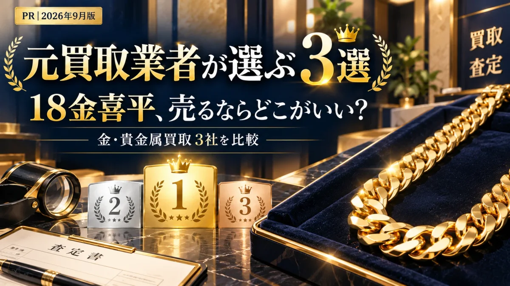

18金の喜平ネックレス、どこで売る？元買取業者が選んだ買取店3選

「喜平って、今いくらで売れるの？」
「近所のお店で、安く買いたたかれない…？」
そんな不安、ありませんか？
その気持ち、よくわかります。
喜平は金額が大きいぶん、どこに持っていくか迷いますよね。
でも、安心してください。
この記事を読み終えるころには、
どこに持っていけばいいか、はっきりしているはずです。
元買取業者の目線でいうと、大事なのはこれだけ。
「全部でいくらになるか」でお店を選ぶ
ネットに出ている「今日の金の値段」だけで決めると、損をしやすいんです。
※本ページにはプロモーションが含まれています。
※掲載の評価・順位は編集部の主観的な比較で、買取価格を保証するものではありません。
喜平が売れる買取店 3社を比較
まずは分かりやすく、比較表にしました。
表は横にスクロール可能
| 買取店 | 総合評価 | 金の手数料 | 買取方法 | 出張料 | キャンセル料 | 査定のしかた | 特徴 |
|---|---|---|---|---|---|---|---|
| 公式サイト | まねきや★★★★★5.0点編集部おすすめ | 0円 キャンペーン中 | 店舗・出張・宅配 | 無料 | 無料 | X線分析装置 マイクロスコープ | 業者の値段で買取。電話予約で最大20%UP（9月30日まで） |
| 公式サイト | おたからや★★★★☆4.5点 | 無料 | 店舗・出張 | 無料 | 無料 | プロの鑑定士 | 全国1,980店舗以上。近くで持ち込める |
| 公式サイト | ブラリバ★★★★☆4.5点 | — | 店舗・出張・宅配 | 要問合せ | 無料 | 査定士 | 全店舗が駅から5分以内。即日現金化 |
表は横にスクロール可能
「今日の金の値段」だけで選ぶのはやばい？
「ネットで今日の金の値段を見たから、もう大丈夫」
そう思っていませんか？
実は、金の値段は毎日変わります。
しかも、この半年でかなり大きく動きました。

実際の数字を見てみましょう。
| 2025年の最安値 | 14,776円 |
|---|---|
| 2026年3月3日過去最高値 | 29,969円 |
| 本日2026年9月25日 | 24,150円 |
| 最高値との差 | −5,819円 |
3月の最高値から、1gあたり約5,800円も下がっています。
喜平は重いぶん、この差が大きくなります。
| 30gの喜平 | 約13万円 |
|---|---|
| 50gの喜平 | 約22万円 |
| 100gの喜平 | 約44万円 |
3月に売っていれば受け取れたお金が、今はもう受け取れません。
そして、この先また上がる保証はありません。
「もう少し待とう」が、一番こわい
だからこそ、今日の値段を見て終わりにせず、
「今、自分の喜平が全部でいくらになるか」を聞いておくことが大切です。
ただし、あわてて近くのお店に持っていくのも注意。
国民生活センターには、こんな相談が寄せられています。
- 「査定だけのつもりだったのに、断りきれずに売ってしまった」
- 「『古い金は価値が下がる』とせかされて、手放してしまった」
- 手数料やキャンセル料の説明がなかった
- 最後にもらえる金額を、先に教えてくれる
- 手数料が引かれない
- 断っても、お金がかからない
※相談の内容は、国民生活センター公表資料（2026年9月2日）をもとに要約しています。
しかも、お店で売った場合は、あとからクーリング・オフができません。
だから、「最初にどのお店に持っていくか」がとても大事なんです。
※金の値段は田中貴金属の店頭小売価格（税込）。2025年の最安値は年間最安値（税抜13,433円）を税込にした値、過去最高値は2026年3月3日の値です。本日の値は毎営業日の公表値を自動で表示しています。18金の差は、今日の18金と純金の買取価格の比率で換算した目安です。過去の値動きは、将来を約束するものではありません。
自分の「喜平」に合ったお店選びが重要
同じ18金の喜平でも、お店によって金額が変わることがあります。
金の重さだけで計算するお店もあれば、
喜平として見てくれるお店もあります。
そこで元買取業者の私が見るのは、この3つ。
- 全部でいくらになる？
「1gいくら」ではなく、合計の金額を聞く - 何か引かれない？
手数料が引かれると、最後にもらえる金額が減る - 喜平としても見てくれる？
重さを量って終わり、になっていないか
この3つを満たしているお店を、これから紹介します。
「遠回りせずに、損せず売りたい！」
という場合は、ぜひ参考にしてみてくださいね。
喜平を売るならここ！買取店3選（査定無料）
🥇第1位：まねきや｜手数料0円＋業者の値段で買い取り（PR）

「買取店って、なんだか怖い…」
そう思う方も多いと思います。
まねきやは、全国に30店舗以上ある買取の専門店。
金やプラチナを、お店同士が取引する「業者の値段」で買い取ってくれます。


※店舗により内装は異なります。
お店は落ち着いた雰囲気で、個室のような査定スペースもあります。
初めてでも入りやすいお店です。
さらに今は、金の手数料が0円。
そのぶん、最後にもらえる金額が減りません。
- お店同士が取引する「業者の値段」で買い取り
- 金の手数料が0円（キャンペーン中）
- 査定料・出張料・キャンセル料は無料
- 刻印が読めない金も、X線の機械で中身を測れる
- 電話予約で買取額 最大20%UP（9月30日まで）
電話1本で、今の金額を教えてもらえます。
売るかどうかは、金額を聞いてから決めればOKです。
電話で聞くのは「全部でいくら」だけ
電話が苦手でも大丈夫。
聞くことは、ほぼ決まっています。
▼電話の流れ（例）
※重さが分からなくても大丈夫
※この2つを聞いておけば安心
あとは、日にちと場所を決めるだけ。
お店に行く・家に来てもらう・送る、から選べます。
▶まねきやに電話で相談してみる└査定だけでもOK
まねきや利用者の声
利用者の声（店頭で売却）
このようなお店は少し怖いイメージがありましたが、実際に行ってみると居心地も良く、店員さんが一つ一つ説明してくれました。
利用者の声（X線で測定）
X線の機械で細かく計測してもらい、前回ほかで売った時よりも高く買い取ってもらえました。刻印のない金でも含有量を測れるそうです。
※公式サイト掲載の口コミを要約したものです。感想には個人差があり、同等の対応・金額を保証するものではありません。
売るまでの流れ（聞くだけでもOK）
- 電話で査定を予約 (通話無料・9:00〜21:00)
- お店・出張・宅配から選ぶ
- 全部でいくらになるか聞く
- 納得できたら売る (断っても0円)
🥈第2位：おたからや｜近くのお店に持ち込みたいなら（PR）

「近所で、すぐ見てもらいたい」
そんな人に合うのが、おたからやです。
全国47都道府県に、1,980店舗以上あります（※1）。
- 全国1,980店舗以上（※1）
- 買取手数料・査定料が無料
- Googleの口コミで4.8（※2）
※1 2026年9月時点 ※2 2026年1月1日〜5月31日の直営店（422店舗）のGoogleの評価をもとに公式サイトが公表している数値
▶おたからや公式サイトを見る└受付は19時まで
🥉第3位：ブラリバ｜今日すぐ現金がほしいなら（PR）

「仕事帰りに、さっと寄りたい」
そんな人に合うのが、ブラリバです。
全店舗が駅から5分以内で、その日のうちに現金にできます。
- 全国20店舗以上、全店舗が駅から5分以内
- 高額査定＆即日現金化
- 店頭・出張・宅配の3つから選べる
▶ブラリバ公式サイトを見る└LINE査定は24時間受付
まずは無料で、金額だけ聞いてみよう
喜平の売り方は、人それぞれ。
だからこそ、どのお店に持っていくかが大事です。
同じ18金の喜平でも、お店によって
最後にもらえる金額は変わります。
今回紹介したお店は、どこも査定は無料。
金額を聞いて、断っても大丈夫です。
「売る」ではなく「今の金額を知る」
まずはここから始めてみてください。
- 本ページはプロモーションを含みます。
- 掲載の順位・総合評価は編集部の主観的な比較であり、買取価格の優劣を保証するものではありません。
- 実際の査定額は、当日の金相場・重さ・純度・状態によって変わります。
- 「最大20%UP」等のキャンペーンは対象品・上限などの条件があります。適用条件は申込時にご確認ください。
- 掲載内容は2026年9月25日時点の情報です。最新の条件は各社公式サイトでご確認ください。